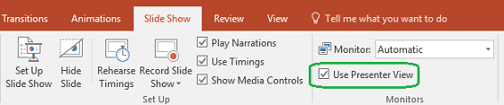

PowerPoint Presenter View shows you the current slide, the next slide, and your speaker notes, to help you focus while presenting and connect with your audience.
Select the Slide Show tab.
Select the Use Presenter View checkbox.
Select which monitor to display Presenter View on.
Select From Beginning or press F5.
In Presenter View, you can:
See your current slide, next slide, and speaker notes.
Select the arrows next to the slide number to go between slides.
Select the pause button or reset button to pause or reset the slide timer in the upper left.
See the current time to help you pace your presentation.
Select the font icons to make the speaker notes larger or smaller.
Select the annotations pen icon to draw on the screen in real time, or select a laser pointer.
Select the thumbnail icon to see all the slides in your presentation and quickly jump to another slide.
Select the magnifying glass icon to zoom in on a particular part of a slide.
The screen icon let's you make the screen temporarily black to focus the attention on you.
Select END SLIDESHOW when you're done presenting.